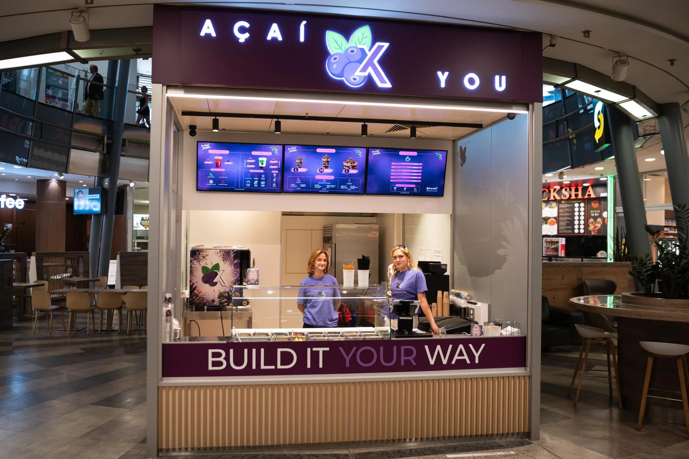
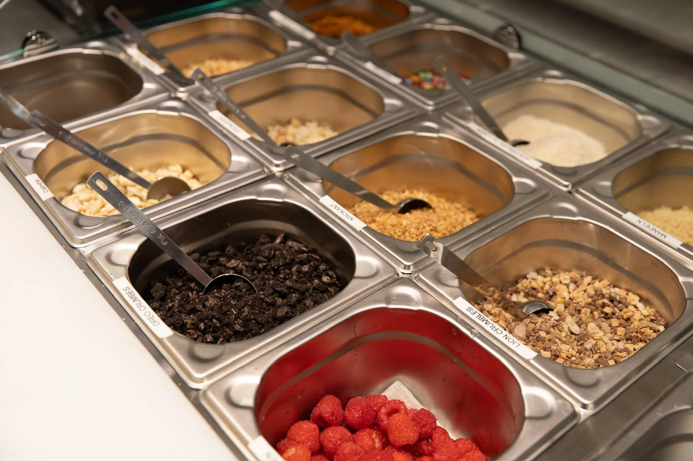

Über uns
Açaí is all about YOU.
Açaí x You begann mit einer einfachen Frage: Wenn kein Geschmack genau gleich ist, warum sollten dann alle dieselbe Bowl bekommen?
From the Amazon to your spoon.
Make it YOUR way!
Unsere Story
Von der Idee zum ersten Store.
Açaí hat Gründer Mark Günther schon vor Jahren in Brasilien kennengelernt. Im Frühjahr 2026 wurde daraus die Idee für einen eigenen Açaí Store in Berlin, bei dem nicht eine fertige Standardkombination im Mittelpunkt steht, sondern du.
Aus dem ersten Gedanken wurde Schritt für Schritt ein klares Konzept: cremige Açaí Bowls, frei wählbare Toppings, moderne Drinks und ein schneller Ablauf zum Mitnehmen. Im Juli 2026 eröffnete der erste Açaí x You Store im Schloß-Straßen-Center am Walther-Schreiber-Platz in Berlin-Steglitz.
Der Store ist kompakt, die Auswahl ist es nicht. Du entscheidest selbst, ob deine Bowl fruchtig, crunchy, schokoladig oder von allem etwas sein soll. Genau daraus ist unser Versprechen entstanden: Build it YOUR way.


Build it YOUR way
Schicht für Schicht.
Bei uns wählst du nicht nur ein Topping. Du baust deine Bowl Schicht für Schicht: zuerst Sauce, auch innen am Becherrand, dann Açaí, in der Mitte Chia Pudding und Granola, darauf eine zweite Schicht Açaí, oben Früchte und Crunch und zum Schluss nochmal Sauce. So steckt nicht nur oben etwas drauf, jeder Löffel schmeckt nach deiner Kombination.
Die Toppings sind im Preis enthalten. Die drei Größen S, M und L geben dir die Wahl zwischen kleinem Snack, beliebter Standardgröße und unserem breiten Dessertbecher. Dazu gibt es Iced und Flavoured Matcha, Limeades und Kaffee.
Wofür wir stehen
Fünf Dinge, die bleiben.
- Individualität
Deine Bowl richtet sich nach deinem Geschmack, nicht umgekehrt.
- Frische
Früchte und Toppings bereiten wir jeden Tag frisch für den Store vor.
- Klare Produktwelt
Açaí steht im Mittelpunkt. Matcha, Limeades und Kaffee ergänzen das Konzept.
- Schnelligkeit
Ein unkomplizierter Ablauf zum Mitnehmen, ohne dass die Bowl beliebig wird.
- Wiedererkennung
Dunkles Açaí Lila, starke Schichten und Bowls, die so gut aussehen, wie sie schmecken.
Wer dahintersteht
Ein Team aus Berlin.
Hinter Açaí x You steht Gründer Mark Günther mit seinem Team. An der Theke in Steglitz layern sie jede Bowl frisch vor deinen Augen, kennen die besten Kombinationen und helfen dir, deine Lieblingsbowl zu finden. Was im Store passiert, zeigen wir jeden Tag auf TikTok und Instagram unter @acaixyou.

Wie es weitergeht
Gestartet in Berlin. Bald in Spandau und Fürth.
In Berlin eröffnen wir unsere Stores selbst, als Nächstes in den Spandau Arcaden. Mit Fürth kommt unser erster Standort außerhalb Berlins. Für weitere Städte suchen wir Franchise Partnerinnen und Partner. Und für Firmenevents, Geburtstage oder Hochzeiten bringen wir Açaí x You auch als Catering zu dir.